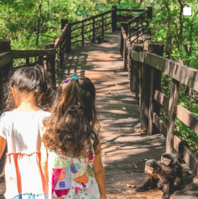

Destaques do Parque
Trilhas Ecológicas
As trilhas ecológicas do parque são perfeitas para caminhadas e observação da natureza, proporcionando um contato direto com a fauna e flora locais.
Atividades Educativas

O parque oferece atividades educativas, como oficinas e palestras, voltadas para a conscientização ambiental e o conhecimento sobre a biodiversidade.
Eventos Comunitários
Participe de eventos comunitários que promovem a educação ambiental e a integração da população, como mutirões de limpeza e festivais.